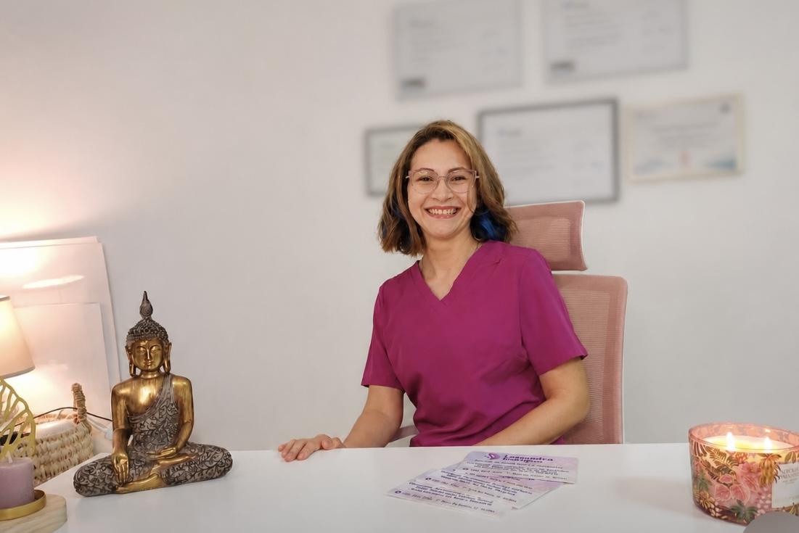
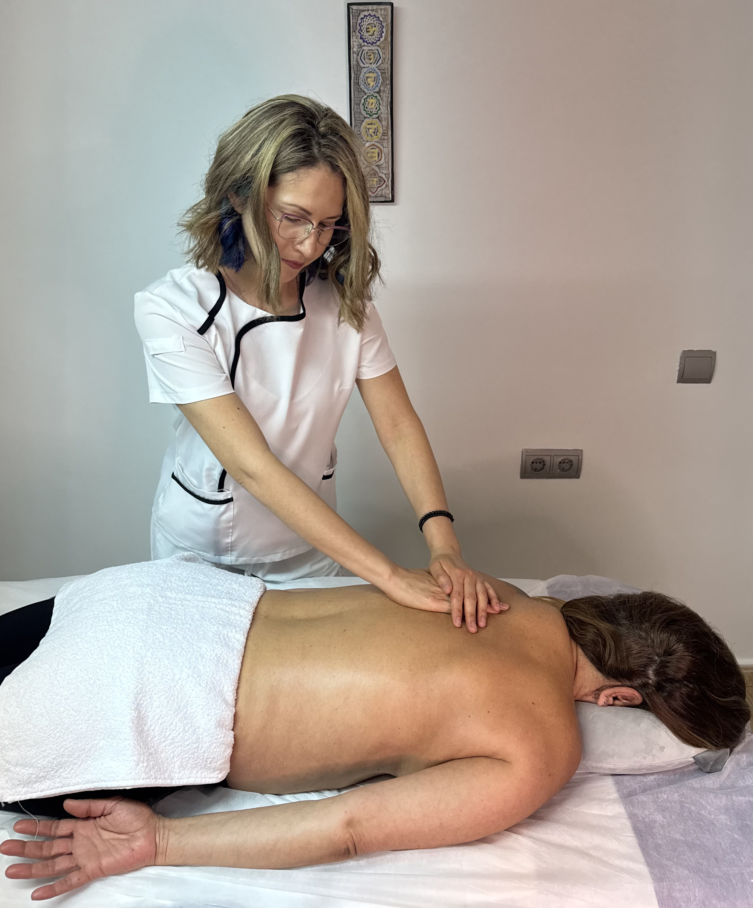

Hola, soy Lessandra, con más de 10 años de experiencia en terapias de rehabilitación del cuerpo físico y canalización energética.
En el 2015 tuve un accidente de tráfico que lesionó mi rodilla y lumbares. Después de siete meses de rehabilitación diaria, comprendí desde mi propia experiencia la importancia del acompañamiento, la escucha y la sanación integral.
Fue entonces cuando comenzó mi camino en el mundo terapéutico donde comencé mis estudios en rehabilitación de fisioterapia, quiromasaje, masaje deportivo, osteopatía, biodinámica craneosacral, y diferentes terapias energéticas como el Reiki, y diferentes técnicas de canalización energéticas.
Sin embargo, con los años seguía pensando que hacía falta una herramienta que integrara todos estos conceptos y fue cuando descubrí La Nueva Terapia®, una herramienta que sumó aún más conciencia, profundidad y sensibilidad a mi forma de acompañar las personas al día de hoy.
Porque mi propósito sigue siendo acompañar a la sanación del cuerpo desde una mirada más integrativa y compasiva.

📞 601 861 940
📧 lessaterapias12@gmail.com
📍 Gandia